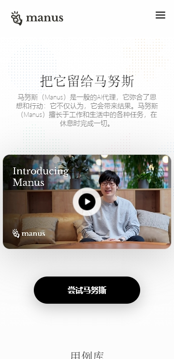
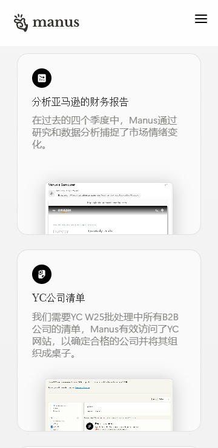

你以为 AI Agent 只是个聊天机器人？我翻到底朝天挖出 5 个藏得真深的冷门玩法
从 Automations 定时任务到 Telegram Agent 连接器，再到 Alchemy 创意总监模式——这些功能藏在层层设置深处，官方几乎不宣传。翻完这篇，你对 AI Agent 的使用姿势至少升一级。
说出来你可能不信，我把 AI Agent 的设置面板翻到最后一个子菜单才发现——它根本不只是一个接了大模型的聊天框。如果你也想这样挖一遍，先从官网上去看看它到底有哪些功能入口。
大部分人用它的方式大概是：先从官方下载装好 App → 输入一句需求 → 等它跑完 → 拿结果走人。积分每天 0 点刷新 300，偶尔感叹一句「今天积分怎么又没了」，然后继续下一个任务。我自己也曾是这芸芸众生之一，直到上个月账号里的积分连续三天在凌晨莫名消失，才硬着头皮去翻设置面板排雷——这一翻不要紧，五个官方几乎不宣传的隐藏功能直接砸在脸上。
隐藏一：Automations 定时任务——你可能忘了自己设过
我那三天凌晨积分蒸发的罪魁祸首就是它。
Automations 藏在「设置 → Automations 管理」里，入口真的不太好找。你可以设定定时触发（比如每天早上 8 点自动跑一个任务）或者事件触发（比如新邮件来了就启动某个智能体）。我之前为了测试一个「每天汇总邮件」的脚本，随手设了一个凌晨 2 点的定时任务，测完就忘了关。结果它每天准时跑，消耗的积分我在手机端根本看不到——因为任务历史和客户端共享，但只会在 Studio 端显示明细。

什么人用得上：需要每日/每周自动跑固定流程的人——比如每天下班前自动汇总当天的 Notion 笔记、每周一早上自动生成上一周的数据周报。什么人可以无视：纯手动偶尔用用的，记得关掉默认开启的 Automations 就行。
隐藏二：Telegram Agent 连接器——你在 Telegram 发的任务也扣积分
这个藏得更深，在「设置 → Agents」里。
如果你连了 Telegram Agent，在 Telegram 里给它发的任何智能体任务都会扣积分，而且两边的任务历史是共享的。我有段时间习惯在 Telegram 里随手丢一些轻量任务，比如「帮我总结一下这条推文」，结果几天后才反应过来——这些小任务在 Telegram 里跑掉的积分，比我在 Studio 里正经跑任务的还多。更坑爹的是，Telegram 里跑完的任务不会回到 Studio 的任务列表里，所以你很难一眼看出积分到底花在哪了。
排查方法：打开 Telegram → 找 Manus Agent 对话 → 往上翻最近发过什么。不需要的时候，进 Agents 设置里点「断开」就行。
隐藏三：Alchemy 模式——Max 独有的创意总监
Manus 2.0 上线时官方只提了一嘴「视频编辑器」，几乎没说里面藏了个叫 Alchemy 的高级模式。
普通模式下，视频编辑器会自动帮你写脚本、拆场景、生成画面、选音乐。Alchemy 则是另一个量级——它同时调用视频生成和代码生成两种能力，创意方向更大胆，视觉细节更精致，甚至会根据内容的重要性动态调整节奏，而不是机械地等长分配。代价是积分消耗翻倍，但出来的东西确实像有人当过创意总监审过一遍。
入口在 Studio 里选 Video Editor 之后，界面上有个不太显眼的「Alchemy」按钮，点进去之后就像进了一个单独的模式。写好创意方向，剩下的交给它。Alchemy 模式的完整参数和进阶用法，去ai agent文档里搜就有更详细的步骤。

隐藏四：聊天模式 0 消耗——轻量需求别走任务通道
这个严格来说不算隐藏，但 80% 的人不知道什么时候该切模式。
AI Agent 有两个模式：任务模式（消耗积分，适合需要调工具、跑代码、产出文件的重任务）和聊天模式（0 消耗，就是纯对话）。但坏就坏在，很多人写坏指令的时候混了轻量需求进去——比如「帮我润色一下这段话」，明明聊天模式 30 秒搞定，结果走了任务模式，AI 反复确认三轮，积分花了小一百。
快速判断标准：要不要产出文件、要不要调用外部工具（搜索、代码执行、视频生成）——都不要就切聊天模式。指令提交前再过一遍这个自检清单：目标说清了吗？范围圈定了吗？格式指定了吗？有没有可以走聊天模式的轻量内容混进来？
隐藏五：积分消耗明细——藏在三级菜单里的破案神器
很多人抱怨「积分消失了」，但没人知道去哪查。
入口路径是：设置 → 账单 / 用量 → 消耗明细。每一笔消耗对应哪个任务、扣了多少积分、时间戳精确到秒，全部列在这里。你那笔「凭空消失」的 200 积分，大概率能在这里找到——是 Automations 凌晨跑的，还是你在 Telegram 里发的一条「帮我搜点资料」，或者是多设备同步时手机端后台悄悄触发的 Lite 模型重试。
一个提醒：别碰登录方式切换
这不是隐藏功能，是我专门给踩过坑的人提的醒。
AI Agent 的账号永久绑定登录方式——你当初用手机号注册的，现在习惯性用邮箱登，它就把你当成新账号了。而且它当前不支持绑定备用登录方式，也不支持切换。如果哪天忘了当初用什么注册的，只能把手机号、邮箱、Google、Apple 挨个试。所以注册时选好一个你长期不会变的方式，记在密码管理器的备注里。
把 AI Agent 用透，关键不在于把每个功能都摸一遍，而在于知道哪些功能是「默认藏起来的」——Automations 可能帮你省掉每天重复的手工活，Telegram Agent 能让你在通勤路上随手跑任务，Alchemy 模式能让你几秒钟出一个像样的广告视频。前提是你得先知道它们存在。本文提到的功能细节和更完整的设置项，我同步整理到了GitHub、Gitee、GitCode，哪个方便你访问哪个。